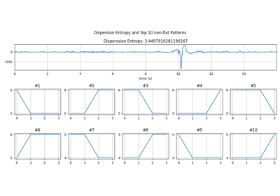
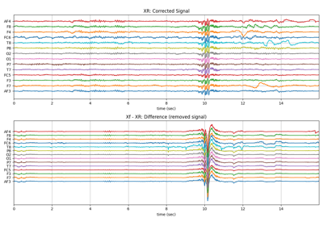

Note
Go to the end to download the full example code or to run this example in your browser via JupyterLite or Binder
MEA: Step-wise Analysis: Example¶
In this example code, we demonstrate analysis of MEA Recording, with each step. There are 13 steps.
Read HDF File
Stim loc
Align Cycles
Average Cycles/Select one
Activation Time
Activation & Repolarisation Time
APD computation
Extract EGM
EGM Feature Extraction
BAD Channels
Feature Matrix
Interpolation
Conduction Velocity
#sp.mea
import numpy as np
import matplotlib.pyplot as plt
import os, requests
import spkit as sp
print('spkit-version: ',sp.__version__)
# Download Sample file if not done already
file_name= 'MEA_Sample_North_1000mV_1Hz.h5'
if not(os.path.exists(file_name)):
path = 'https://spkit.github.io/data_samples/files/MEA_Sample_North_1000mV_1Hz.h5'
req = requests.get(path)
with open(file_name, 'wb') as f:
f.write(req.content)
spkit-version: 0.0.9.7
Step 1: Read File¶
fs = 25000
X,fs,ch_labels = sp.io.read_hdf(file_name,fs=fs,verbose=1)
base key(s) found in file <KeysViewHDF5 ['Data']>
Shape of Signals: (60, 250000)
- #Channels = 60
- Duration (s) = 10.0
Step 2: Stim Localisation¶
stim_fhz = 1
stim_loc,_ = sp.mea.get_stim_loc(X,fs=fs,fhz=stim_fhz, plot=1,verbose=1)
stim_loc_ms = 1000*np.array(stim_loc)/fs
t = 1000*np.arange(X.shape[1])/fs
sep = 1000
tix = np.arange(len(X))*sep
tiy = np.arange(0,len(X)+1,5)
tiy[0] =1
plt.figure(figsize=(12,7))
plt.plot(t,X.T - tix)
plt.xlim([t[0],t[-1]])
plt.yticks(-(tiy-1)*sep,tiy,fontsize=10)
plt.ylabel('Channel #')
plt.xlabel('time (ms)')
plt.title('Full recording of channels')
plt.xticks(stim_loc_ms)
plt.tight_layout()
plt.show()

-#cycles= 10
Step 3: Align Cycles¶
exclude_first_dur=2
dur_after_spike=500
exclude_last_cycle=True
XB = sp.mea.align_cycles(X,stim_loc,fs=fs, exclude_first_dur=exclude_first_dur,dur_after_spike=dur_after_spike,
exclude_last_cycle=exclude_last_cycle,pad=np.nan,verbose=True)
print('Number of EGMs/Cycles per channel =',XB.shape[2])
ch = 0
t = 1000*np.arange(XB.shape[1])/fs
plt.figure(figsize=(5,4))
plt.plot(t,XB[ch,:,:])
plt.grid()
plt.title(f'{XB.shape[2]} Cycles (Alinged) of Channel: {ch}')
plt.xlabel('time (ms)')
plt.show()
Shape: (60, 12450, 9)
Number of EGMs/Cycles per channel = 9
Step 4: Average Cycles or Select one¶
egm_number = -1
if egm_number<0:
X1B = np.nanmean(XB,axis=2)
print(' -- Averaged All EGM')
else:
# egm_number should be between from 0 to 'Number of EGMs/Cycles per channel '
assert egm_number in list(range(XB.shape[2]))
X1B = XB[:,:,egm_number]
print(' -- Selected EGM ->',egm_number)
print('EGM Shape : ',X1B.shape)
-- Averaged All EGM
EGM Shape : (60, 12450)
Step 5-6: Activation and Repolarisation Time¶
#at_range = [0,100]
#rt_range = [2,100]
at_range=[0,None]
rt_range= [0.5, None]
# for only activation
at_loc = sp.mea.activation_time_loc(X1B,fs=fs,at_range=at_range)
# for only activation and repolarisation together
at_loc, rt_loc = sp.mea.activation_repol_time_loc(X1B,fs=fs,at_range=at_range, rt_range=rt_range)
at_loc_ms = 1000*at_loc/fs
rt_loc_ms = 1000*rt_loc/fs
at_loc_ms, rt_loc_ms
(array([ 16.64, 19.56, 13.96, 10.88, 19.52, 16.88, 20.04, 14.04,
323.44, 18.6 , 14.84, 16.16, 11.48, 12.4 , 284.08, 10.64,
9.48, 8.24, 9. , 7. , 8.04, 5. , 5.48, 174.48,
2.72, 176.4 , 8.04, 357. , 394.88, 1.84, 349.76, 345.48,
4.72, 7.88, 209.08, 1.48, 201.6 , 4.64, 2.68, 4.12,
330.32, 6.56, 7.56, 7.92, 9.24, 343.92, 10.96, 10.52,
14.32, 13.76, 17.12, 16.68, 13.6 , 19.68, 16.48, 19.48,
11.16, 13.92, 19.52, 16.76]), array([349.76, 323.4 , 278.08, 44.6 , 472.64, 120.6 , 424.96, 472.64,
340.32, 302.92, 271.48, 472.64, 16.16, 16.16, 314.8 , 11.36,
10.68, 9.52, 12.04, 9.12, 44.6 , 429.52, 407.48, 202.68,
342.48, 201.6 , 351.84, 357.96, 419.36, 425. , 351.88, 351.84,
316.36, 460. , 219.32, 278.08, 235.56, 295.76, 323.4 , 323.4 ,
343.92, 349.76, 342.48, 202.68, 330.28, 357.04, 351.84, 145.2 ,
245.88, 472.64, 278.08, 323.4 , 397.28, 295.76, 349.76, 349.76,
44.6 , 44.6 , 83.16, 93.72]))
Step 7: APD Computation¶
apd_ms = rt_loc_ms-at_loc_ms
AT_grid = sp.mea.arrange_mea_grid(at_loc_ms, ch_labels=ch_labels)
RT_grid = sp.mea.arrange_mea_grid(rt_loc_ms, ch_labels=ch_labels)
APD_grid = sp.mea.arrange_mea_grid(apd_ms, ch_labels=ch_labels)
fig, ax = plt.subplots(1,3, figsize=(15,5))
sp.mea.mat_1_show(AT_grid,vmax=20, label = ('ms'),ax=ax[0])
ax[0].set_title('Activation Time')
sp.mea.mat_1_show(RT_grid,vmax=100,label = ('ms'),ax=ax[1])
ax[1].set_title('Repolarisation Time')
sp.mea.mat_1_show(APD_grid,vmax=100, label = ('ms'),ax=ax[2])
ax[2].set_title('APD')
plt.tight_layout()
plt.show()
Step 8: Extract EGMs¶
dur_from_loc = 5
remove_drift = True
XE,ATloc = sp.mea.extract_egm(X1B,act_loc=at_loc,fs=fs,dur_from_loc=dur_from_loc,remove_drift=remove_drift)
print(XE.shape, ATloc.shape)
(60, 250) (60,)
Step 9: EGM Feature Extraction¶
EGM_feat = []
for i in range(len(XE)):
egmf, feat_names = sp.mea.egm_features(XE[i].copy(),act_loc=ATloc[i],fs=fs,plot=0,verbose=0,width_rel_height=0.75,
findex_rel_dur=1, findex_rel_height=0.3, findex_npeak=False)
EGM_feat.append(egmf)
#XE = np.array(XE)
#ATloc = np.array(ATloc)
EGM_feat = np.array(EGM_feat)
print('-'*100)
print('Following EGM Features are etracted: ', feat_names)
print('EGM_Feat shape :',EGM_feat.shape)
print('Shapes: XE =',XE.shape, ', AT =',ATloc.shape,', EGM_F=' ,EGM_feat.shape)
print('-'*100)
----------------------------------------------------------------------------------------------------
Following EGM Features are etracted: ['peak_to_peak', 'egm_duration', 'f_index', 'new_duration', 'energy_mean', 'energy_sd', 'noise_var']
EGM_Feat shape : (60, 7)
Shapes: XE = (60, 250) , AT = (60,) , EGM_F= (60, 7)
----------------------------------------------------------------------------------------------------
Step 10: BAD Channels¶
#=============STEP 10.1: BAD Channel (1) ================================
good_channels = []
bad_channels = [15]
p2p_thr=5
bad_ch_stim_thr = 2
bad_ch_mnmx=[None, None]
range_act_thr=[0,50]
bad_channels_list =[]
bad_channels_idx_1 = []
bad_channels_idx_1 = sp.mea.find_bad_channels_idx(X,thr=bad_ch_stim_thr,stim_fhz=stim_fhz,fs=fs,
mnmx=bad_ch_mnmx,plot=False,plot_dur=2,verbose=0)
bad_channels_ch_1 = list(ch_labels[bad_channels_idx_1])
bad_channels_list = bad_channels_list + bad_channels_ch_1
bad_channels_list = list(set(bad_channels_list))
bad_channels_list.sort()
#=============STEP 10.2: BAD Channel (2) ================================
bad_channels_idx_2 = []
bad_channels_idx_2 = np.where(EGM_feat[:,0]<p2p_thr)[0]
bad_channels_ch_2 = list(ch_labels[bad_channels_idx_2])
bad_channels_list = bad_channels_list + bad_channels_ch_2
#=============STEP 10.3: BAD Channel (3) ================================
bad_channels_idx_3 =[]
bad_channels_idx_3 = bad_channels_idx_3 + list(np.where(at_loc_ms<range_act_thr[0])[0])
bad_channels_idx_3 = bad_channels_idx_3 + list(np.where(at_loc_ms>range_act_thr[1])[0])
bad_channels_ch_3 = list(ch_labels[bad_channels_idx_3])
bad_channels_list = bad_channels_list + bad_channels_ch_3
bad_channels_list = bad_channels_list + bad_channels
bad_channels_list = list(set(bad_channels_list))
bad_channels_list.sort()
if len(good_channels):
bad_channels_list = list(set(bad_channels_list) - set(good_channels))
bad_channels_list.sort()
good_channels_list = np.array([ch for ch in ch_labels if ch not in bad_channels_list])
good_channels_list_idx = np.array([list(ch_labels).index(ch) for ch in ch_labels if ch not in bad_channels_list])
print('-'*100)
print('BAD CHANNELS')
print('- BASED ON STIM thr =', bad_ch_stim_thr)
print(' - ch:', bad_channels_ch_1)
print('- BASED ON Peak-to-Peak volt thr:',p2p_thr)
print(' - ch:', bad_channels_ch_2)
print('- BASED ON Activation time (ms) range thr:', range_act_thr)
print(' - ch:', bad_channels_ch_3)
print('- Manually passed:')
print(' - ch:', bad_channels)
print('GOOD CHANNELS passed:')
print(' - ch:',good_channels)
print('-'*50)
print('Final list of Bad Channels:')
print(' - ch:',bad_channels_list)
print('Final list of Good Channels:')
print(' - ch:',good_channels_list)
print('-'*100)
sp.mea.plot_mea_grid(X1B,act_spikes=at_loc,ch_labels=ch_labels,bad_channels=bad_channels_list,
xlim=at_range,verbose=True,
figsize=(8,7),title_style=1, title='Time Trace + AT')
sp.mea.plot_mea_grid(XE,ch_labels=ch_labels,bad_channels=bad_channels_list,
figsize=(8,7),verbose=0,show=True,title_style=1,title='Electrograms (EGMs)')
----------------------------------------------------------------------------------------------------
BAD CHANNELS
- BASED ON STIM thr = 2
- ch: [21, 31, 43, 41, 51, 61, 71]
- BASED ON Peak-to-Peak volt thr: 5
- ch: [15, 21, 31, 43, 41, 52, 51, 61, 71]
- BASED ON Activation time (ms) range thr: [0, 50]
- ch: [27, 15, 21, 31, 43, 41, 52, 51, 61, 71, 73, 85]
- Manually passed:
- ch: [15]
GOOD CHANNELS passed:
- ch: []
--------------------------------------------------
Final list of Bad Channels:
- ch: [15, 21, 27, 31, 41, 43, 51, 52, 61, 71, 73, 85]
Final list of Good Channels:
- ch: [47 48 46 45 38 37 28 36 17 26 16 35 25 14 24 34 13 23 12 22 33 32 44 42
53 54 62 63 72 82 83 64 74 84 75 65 86 76 87 77 66 78 67 68 55 56 58 57]
----------------------------------------------------------------------------------------------------
-852.8768781599376 1088.2322322933303
Step 11: Feature Matrix¶
Ax,Mxbad = sp.mea.mea_feature_map(at_loc_ms,ch_labels=ch_labels,bad_channels=bad_channels_list,figsize=(10,4),
vmin=0,vmax=20,label='ms',title='Activation Time')
_ = sp.mea.mea_feature_map(EGM_feat[:,0],ch_labels=ch_labels,bad_channels=bad_channels_list,figsize=(10,4),
vmin=0,vmax=300,label='mV',title='Peak-to-Peak')
_ = sp.mea.mea_feature_map(1000*EGM_feat[:,1]/fs,ch_labels=ch_labels,bad_channels=bad_channels_list,figsize=(10,4),
vmin=0,vmax=5,label='ms',title='EGM Duration')
_ = sp.mea.mea_feature_map(EGM_feat[:,2],ch_labels=ch_labels,bad_channels=bad_channels_list,figsize=(10,4),
vmin=0,vmax=5,label='F-index',title='Fractionation Index',fmt='.0f')

Step 12: Interpolating Activation Map¶
range_act_thr=[0,50]
intp_param = dict(pkind='linear',filter_size=3,method='conv')
AxI, AxIx = sp.fill_nans_2d(Ax*Mxbad,clip_range=range_act_thr,**intp_param)
sp.mea.mat_list_show([Ax, Ax*Mxbad, AxI],figsize=(15,4),vmin=0,vmax=20,grid=(1,3),
titles=['Activation Time', '- Bad Channels', 'Interpolated Activation Time'],labels=['ms','ms','ms'])
sp.mea.mat_list_show([AxI, AxIx],figsize=(15,4),vmin=0,vmax=20,grid=(1,3),
titles=['Interpolated (preserving original values)', 'Interpolation-Smooth'],labels=['ms','ms'])

Step 13: Computing Conduction Velocity and maps¶
#=============STEP 13: Computing Conduction Velocity ================
cv_param = dict(eD=700,esp=1e-10,cv_pad=np.nan,cv_thr=100,arr_agg='mean',plots=2,verbose=True)
CV_df, CV_thetas, CV0, CV = sp.mea.compute_cv(AxI,Mxbad,flip=False,**cv_param)
_, CV_thetas_smooth, _, _ = sp.mea.compute_cv(AxIx,Mxbad,flip=False,silent_mode=True,**cv_param)
plt.figure(figsize=(15,6))
plt.subplot(121)
im = plt.imshow(AxI,cmap='jet',interpolation='bilinear',vmin=0,vmax=20,extent=[0,7,7,0])
plt.contour(AxI,levels=25,colors='k')
plt.colorbar(im, label='ms')
plt.title('Activation Map')
plt.xticks([])
plt.yticks([])
plt.subplot(122)
sp.mea.mat_1_show(CV*Mxbad,fmt='.1f',vmin=10,vmax=30,cmap='jet',label='cm/s',title='Cond. Velocity')
plt.tight_layout()
plt.show()
cv_arr_prop = dict(color='w',scale=None)
_ = sp.direction_flow_map(X_theta=CV_thetas,X=AxI,upsample=1,
figsize=(15,7),square=True,cbar=False,arr_pivot='mid',
stream_plot=True,title='CV',show=True,
heatmap_prop =dict(vmin=0,vmax=20,cmap='jet'),
arr_prop =cv_arr_prop,
stream_prop =dict(density=1,color='k',linewidth=2))


Total running time of the script: (0 minutes 6.638 seconds)
Related examples



Dispersion Entropy with top patterns
Dispersion Entropy with top patterns

EEG Artifact removal using ICA
EEG Artifact removal using ICA